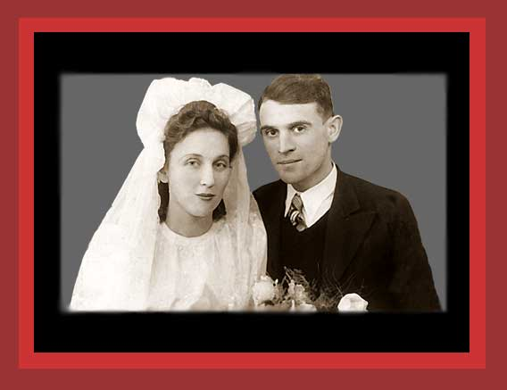

| This is a wedding portrait of Gucia Brzeziner and Mendel-Ajzik Kleiner taken in the Lazy ghetto. Two years later both were murdered in Auschwitz. Documentation: Democide: Nazi Genocide and Mass Murder. Source: The United States Holocaust Memorial Museum. |